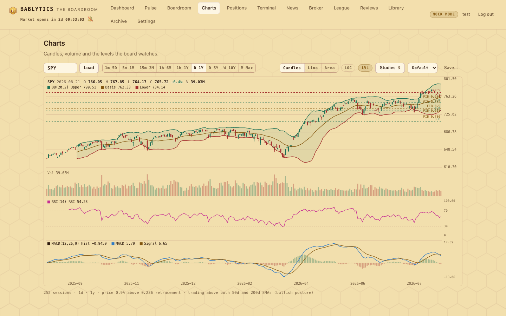
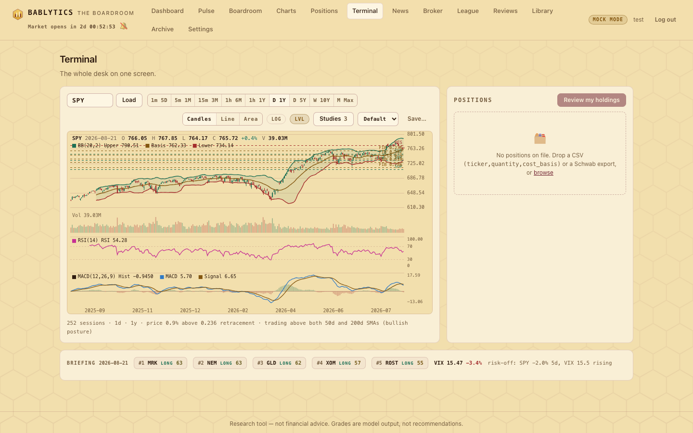

Desk · charts
Charts Pro and the Terminal
A hand-rolled canvas charting workspace — nine timescales down to one-minute bars, thirty studies in stacked panes, layouts saved as templates — and the tiled Terminal that puts the chart, your positions and the briefing strip on one screen.
Charts (#/charts) and the Terminal (#/terminal) are powered by one self-contained module, web/terminal.js: a candlestick engine drawn on <canvas> with no chart library, a thirty-study engine, and a tiled layout that reuses the same chart and the Positions table. Everything here is a read of market data; nothing on these pages places an order.

Charts Pro#
Nine timescales, including intraday#
The toolbar's timescale picker maps each label to an interval + range pair on the chart API (GET /api/chart/{ticker}?interval=&range=). The default is D 1Y.
| Label | Interval | Range | Notes |
|---|---|---|---|
| 1m 5D | 1m | 5d | Intraday; one-minute bars are available for at most a handful of days. |
| 5m 1M | 5m | 1mo | Intraday. |
| 15m 3M | 15m | 3mo | Intraday; 5/15/30-minute bars cap at about 60 days of history. |
| 1h 6M | 1h | 6mo | Intraday. |
| 1h 1Y | 1h | 1y | Intraday; hourly bars reach back about two years. |
| D 1Y | 1d | 1y | Default. Daily bars also carry the 50d/200d SMA series. |
| D 5Y | 1d | 5y | |
| W 10Y | 1wk | 10y | |
| M Max | 1mo | max | All available monthly history. |
Server side, each interval has its own allowed range list and the data provider's day caps (1m ≤ 5d; 5m/15m/30m ≤ 3mo and 60 days; 1h ≤ 2y; daily and up to max). An invalid combination returns 400 with the allowed list for that interval; an unknown ticker returns 404. Successful payloads are cached for five minutes, empty results for one. Rows carry an epoch timestamp and an ISO string. The legacy ?period= parameter still works and maps onto daily bars.
Styles and toggles#
- Candles / Line / Area — the price pane's style.
- LOG — logarithmic price scale (falls back to linear when the low is not positive).
- LVL — overlays the board's support / resistance / Fibonacci levels from the technicals collector. These are daily levels; they are drawn on the daily timescales.
- Studies — opens the studies dialog (below); the button shows how many instances are on the chart.
- Template picker and Save… — layouts (below).
The footer under the chart summarises the view in one mono line — sessions drawn, interval, range, and the levels read (for example "price 0.9% above 0.236 retracement · trading above both 50d and 200d SMAs (bullish posture)").
The thirty studies#
The study registry in terminal.js holds exactly thirty studies: twelve that draw on the price pane (overlays) and eighteen that each get their own lower pane, stacked under the price and volume panes. Every study has editable parameters with sane ranges and a colour per output, and every output is also labelled with its live value in the pane header — never colour alone. A study that throws shows an inline error chip and the rest of the chart keeps drawing.
| Pane | Studies (default parameters) |
|---|---|
| Overlay (12) | SMA (20) · EMA (20) · WMA (20) · Hull MA (20) · VWAP (session, resets daily) · Bollinger Bands (20, 2) · Keltner Channels (20, ATR 10, 2) · Donchian Channels (20) · Parabolic SAR (0.02, 0.2) · Ichimoku Cloud (9, 26, 52) · Linear Regression Channel (100, 2) · Pivot Points (Classic) |
| Lower (18) | RSI (14) · MACD (12, 26, 9) · Stochastic Fast (14, 3) · Stochastic Slow (14, 3, 3) · ATR (14) · ADX / DMI · CCI · ROC · Momentum · Williams %R · OBV · Accumulation/Distribution · Chaikin Oscillator · MFI · TRIX · Aroon · Standard Deviation · Volume + SMA |
Bounded oscillators (RSI, the stochastics) draw on a fixed 0–100 scale with guide lines at 30/70 or 20/80. The math carries golden-value unit checks; node check_studies.js runs them.
The studies dialog#
Press Studies to open a two-column dialog: a searchable list of the thirty studies on the left, your current instances on the right. Add a study to create an instance; edit its parameters and pick colours per output; reorder or remove instances; toggle one off without removing it. Instances are part of the chart state and of any template you save.
Templates in localStorage#
A template is a snapshot of the layout — chart style, log scale, and the list of study instances with their parameters, colours and on/off state. Templates live in the browser under bablytics_chart_templates. The picker always offers Default (the built-in layout, or your own saved "Default" if you overwrite it) plus every name you have saved with Save…; the chart opens on the stored Default. Templates are per browser — they do not sync and they are not in the database.
Crosshair and readouts#
Moving the pointer over any pane shows a shared crosshair: the bar's date, O/H/L/C, volume and the change in the price-pane header, and each study's values in its own pane header. The chart is DPR-aware, draws on requestAnimationFrame, re-lays out through a ResizeObserver, and downsamples past 2,000 bars so a "M Max" or "1m 5D" request stays smooth. Colours are read from the theme tokens at draw time and repaint on the day/night switch.
The Terminal: the whole desk on one screen#

The Terminal mounts three tiles: the Charts Pro chart across two columns, the Positions table (the same component as the Positions page, with its upload zone and Review my holdings button), and a full-width briefing strip that shows the latest run's date, its top five leads as chips (rank, ticker, direction, grade), the VIX print and change, and the regime line. Clicking a chip — or a ticker in the positions table — loads that symbol in the chart. Under 900px wide the tiles collapse to one column. If no briefing has run yet the strip says so and points you back to the dashboard.
Deep links into the chart#
Ticker chips elsewhere in the app — the matched-ticker chips on News rows, for instance — link to #/charts/<TICKER>, which opens Charts Pro with that symbol loaded. An unknown segment just lands on the charts view with its default symbol.
bablytics/marketdata.py over the same market-data source the rest of the app uses (yfinance). Nothing is streamed: each load is one request, cached for five minutes. For what leaves your machine, see Data & privacy.